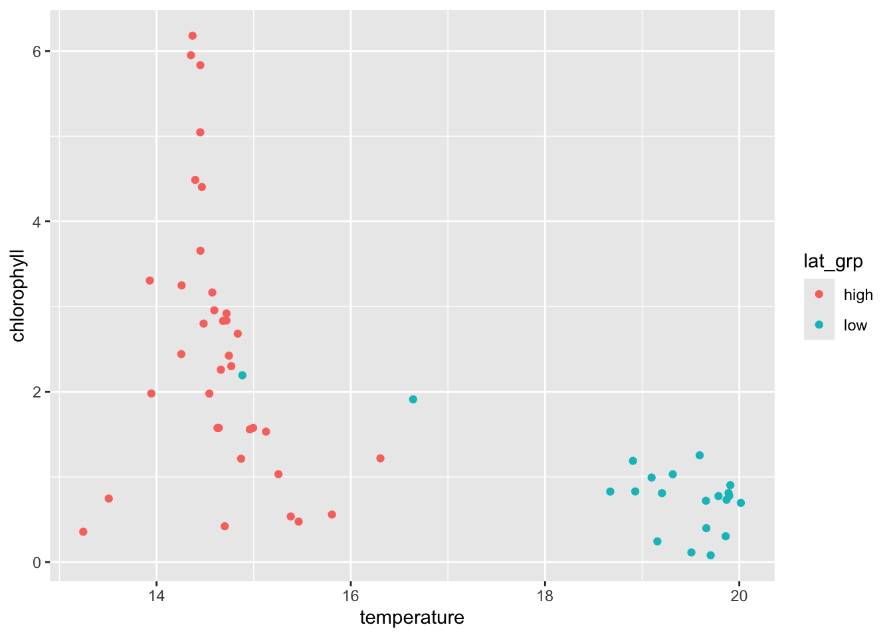
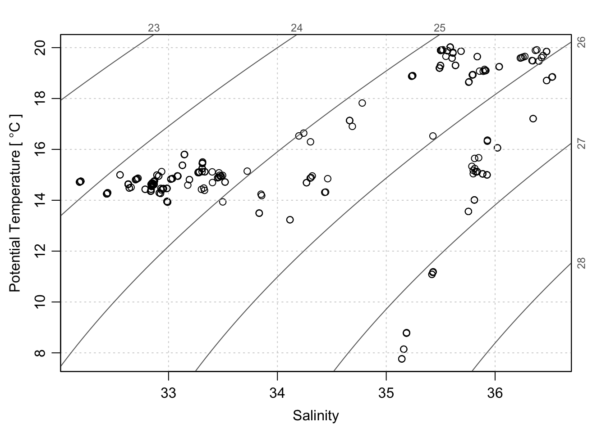
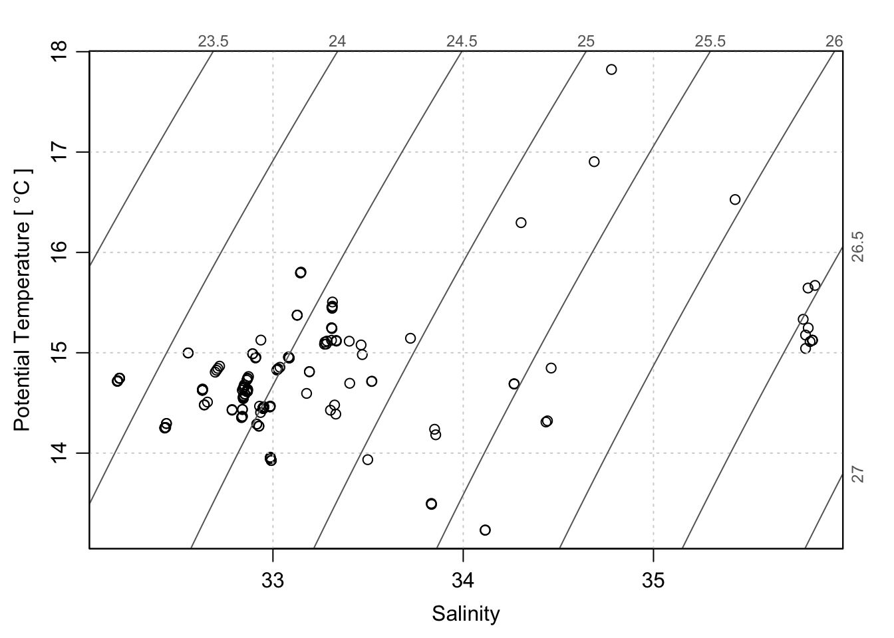
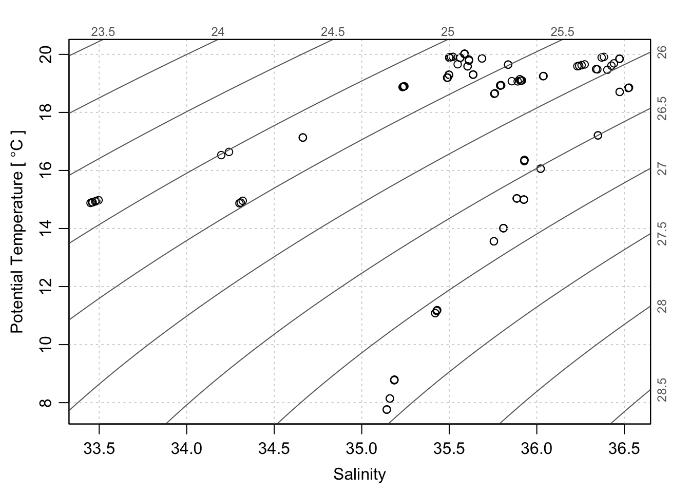
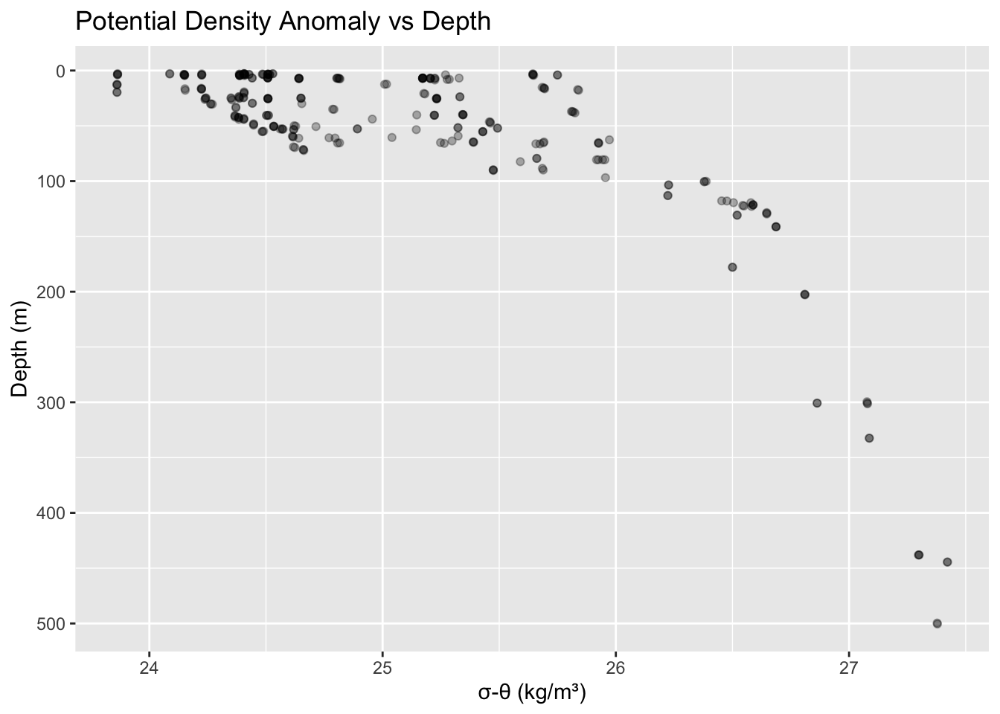
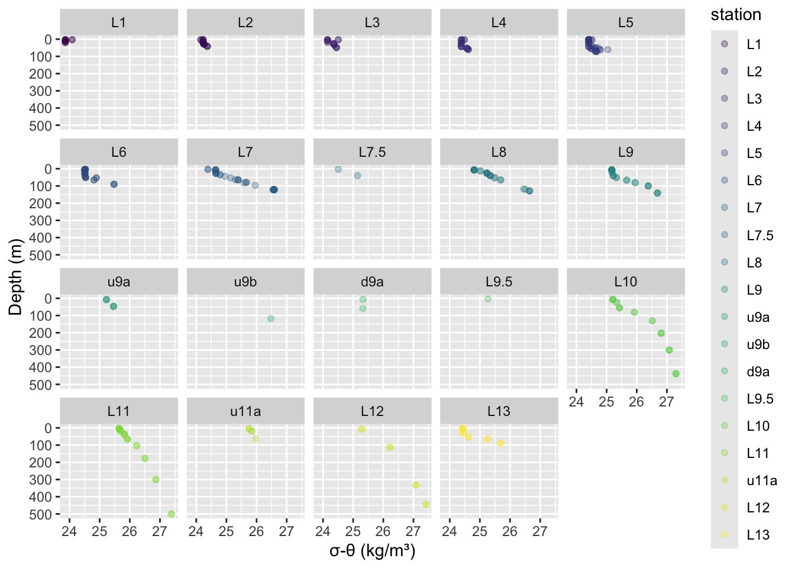
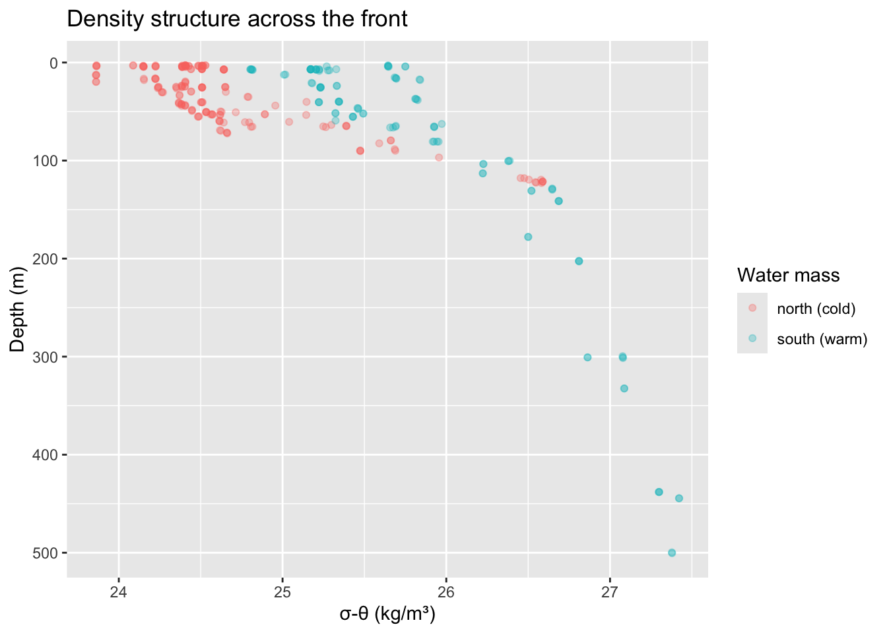

Analyse and plot AR61b CTD data. CTD cast data are downloaded from the NES-LTER API and joined to bottle chlorophyll measurements. This could be done in R using functions from dplyr and tidyr, but I’ve done this here in python:
https://github.com/blongworth/whoi-ctd-data
Setup libraries
We’ll use functions from dplyr, tidyr, and ggplot. It’s easy to load these and other packages at once using library(tidyverse). Is this a good idea? It’s easy, but makes it harder to know where functions come from.
We’ll also use the oce package later in the notebook, so we’ll load it here.
oce can be installed with install.packages("oce").
It’s good practice to load all libraries at the beginning of the code.
library(tidyverse)
── Attaching core tidyverse packages ──────────────────────── tidyverse 2.0.0 ──
✔ dplyr 1.2.1 ✔ readr 2.2.0
✔ forcats 1.0.1 ✔ stringr 1.6.0
✔ ggplot2 4.0.3 ✔ tibble 3.3.1
✔ lubridate 1.9.5 ✔ tidyr 1.3.2
✔ purrr 1.2.2
── Conflicts ────────────────────────────────────────── tidyverse_conflicts() ──
✖ dplyr::filter() masks stats::filter()
✖ dplyr::lag() masks stats::lag()
ℹ Use the conflicted package (<http://conflicted.r-lib.org/>) to force all conflicts to become errors
library(oce)
Loading required package: gsw
Note that library(tidyverse) tells us what packages we loaded, and more importantly, what name conflicts we’ve created.
Think of package functions like any other variable or object (they are!).
If we do x <- 4 and then x <- 2, x is now 2 because reassigning overwrites the previous value of x.
Load data
We’ll load the data directly from a url on github so we don’t have to download it. read_csv() from the tidyverse readr package can do this directly.
If we downloaded the data manually, we’d put it within a data folder within our project.
Rows: 296 Columns: 11
── Column specification ────────────────────────────────────────────────────────
Delimiter: ","
chr (1): station
dbl (9): cast, latitude, longitude, depth, niskin bottle, temperature, sali...
dttm (1): timestamp
ℹ Use `spec()` to retrieve the full column specification for this data.
ℹ Specify the column types or set `show_col_types = FALSE` to quiet this message.
Explore!
Check out the structure (also use data browser from environment or view())
Let’s see where these stations are! This just plots lat and lon of points. If we want a better map, there are a bunch of ggplot and other methods for producing nice maps with land, grids, bathymetry, etc.
df |>ggplot(aes(longitude, latitude, color = station)) +geom_point()
Still hard to see. What about making latitude groups?
We’ll make a column splitting data into high and low latitudes using dplyr::mutate() and ifelse to conditionally assign high and low based on the value of the latitude column
Looks like the front is around 40.1N. Let’s add this to our plot. We can iterate on the exact latitude of the front until we think we’ve found the right value.
Warning: Removed 195 rows containing missing values or values outside the scale range
(`geom_point()`).

Two observations: chlorophyll is pretty low and constant in the warmer, offshore water, and it looks like chlorophyll is inversely related to temperature in the colder, more northerly water.
Let’s make a TS plot! There’s a great library for oceanographic stuff: oce. We can install it using `install.packages(“oce”).
oce is pretty picky about data formatting, so we’ll have to make our columns into an oce ctd object using as.ctd(). We’re also using `oce::swPressure() to convert depth to pressure.
library(oce)ctd <-as.ctd(salinity = df$salinity,temperature = df$temperature,pressure =swPressure(df$depth, latitude =40))plotTS(ctd,inSitu =FALSE, # potential temp (default)nlevels =8, # number of isopycnalscol.rho ="gray40", # color of density linesdrawFreezing =TRUE) # show freezing line

This is everything. Do the TS plots look different for the warm and cold masses?
ctd_north <-as.ctd(salinity = df_north$salinity,temperature = df_north$temperature,pressure =swPressure(df_north$depth, latitude =40))plotTS(ctd_north,inSitu =FALSE, # potential temp (default)nlevels =8, # number of isopycnalscol.rho ="gray40", # color of density linesdrawFreezing =TRUE) # show freezing line

South (warmer) water
ctd_south <-as.ctd(salinity = df_south$salinity,temperature = df_south$temperature,pressure =swPressure(df_south$depth, latitude =40))plotTS(ctd_south,inSitu =FALSE, # potential temp (default)nlevels =8, # number of isopycnalscol.rho ="gray40", # color of density linesdrawFreezing =TRUE) # show freezing line

Does density structure across the front show differences? We’ll calcuate sigma theta and add it to the original df. Should we add to the original df or to a new dataframe? How might reassigning df cause issues?
# Calculate sigma-theta and add to dataframedf <- df |>mutate(sigma_theta =swSigmaTheta(salinity, temperature, pressure =swPressure(depth, latitude = latitude)) )
Let’s plot it and add some nice labels.
# Plot sigma-theta vs depthdf |>ggplot(aes(sigma_theta, depth)) +geom_point(alpha =0.3) +scale_y_reverse() +labs(x ="σ-θ (kg/m³)", y ="Depth (m)", title ="Potential Density Anomaly vs Depth")

Is stratification different at different stations?
# Color by station to see stratification differencesdf |>ggplot(aes(sigma_theta, depth, color = station)) +geom_point(alpha =0.3) +scale_y_reverse() +facet_wrap(~station) +labs(x ="σ-θ (kg/m³)", y ="Depth (m)")

Is stratification different across the front?
# Compare north/south front with densitydf |>mutate(lat_grp =ifelse(latitude >40.14, "north (cold)", "south (warm)")) |>mutate(sigma_theta =swSigmaTheta(salinity, temperature, pressure =swPressure(depth, latitude = latitude)) ) |>ggplot(aes(sigma_theta, depth, color = lat_grp)) +geom_point(alpha =0.3) +scale_y_reverse() +labs(x ="σ-θ (kg/m³)", y ="Depth (m)", color ="Water mass",title ="Density structure across the front")

For more info
Check out the NES-LTER API!
https://nes-lter-api.whoi.edu/
There’s also a great R notebook demonstrating getting data directly from the API and making more cool plots: